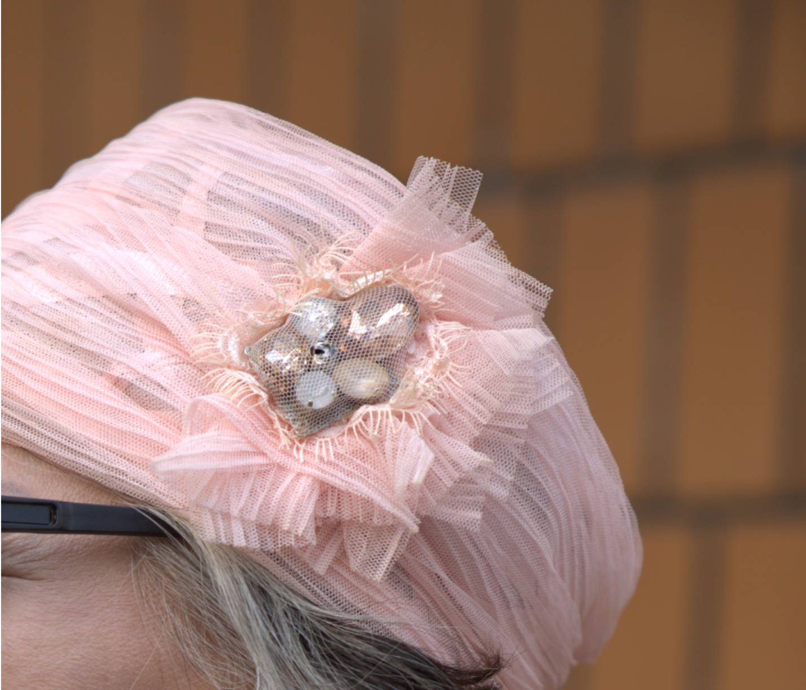
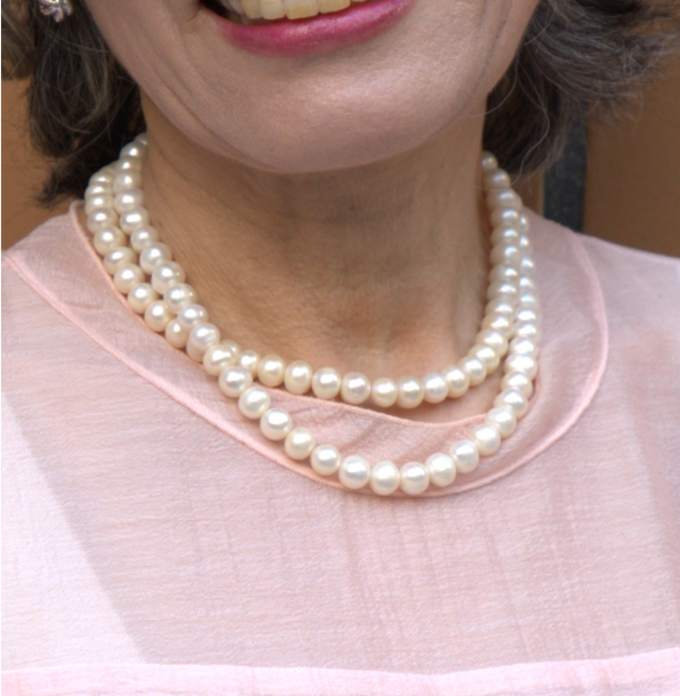
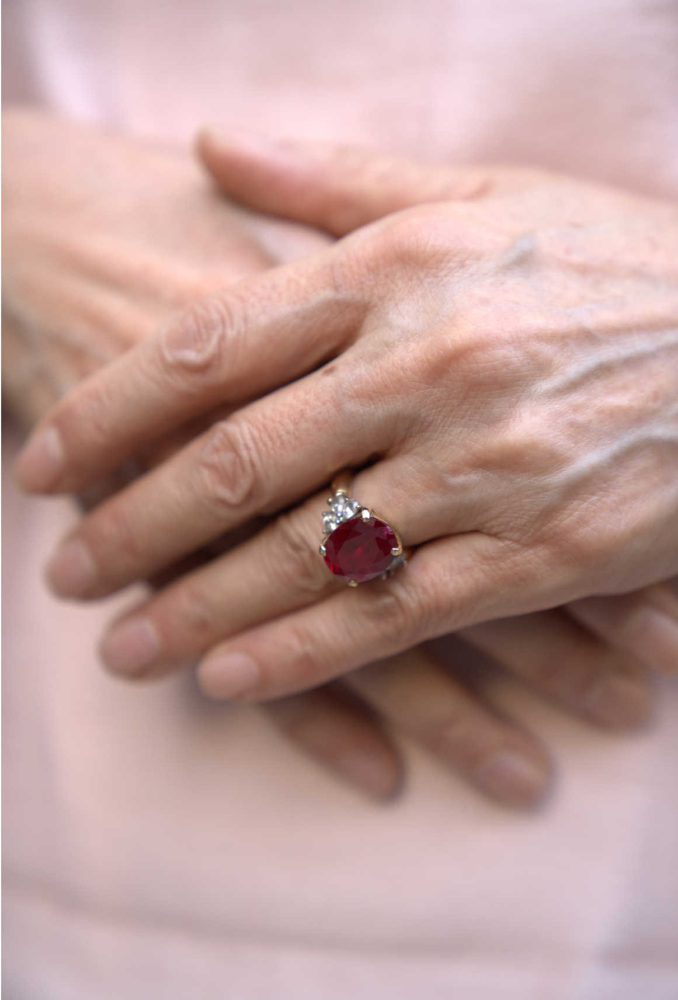
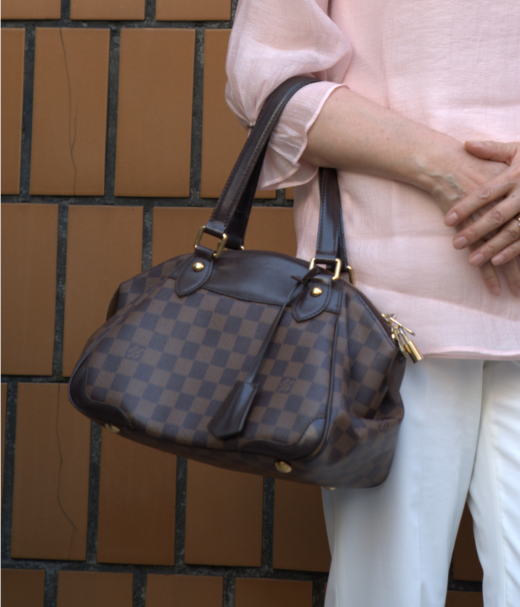
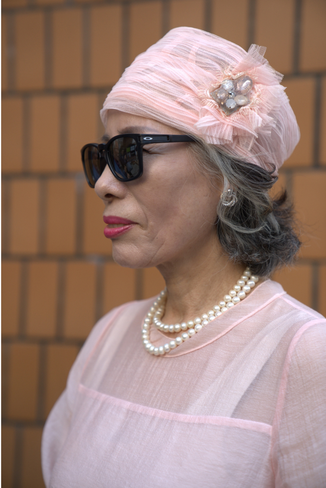
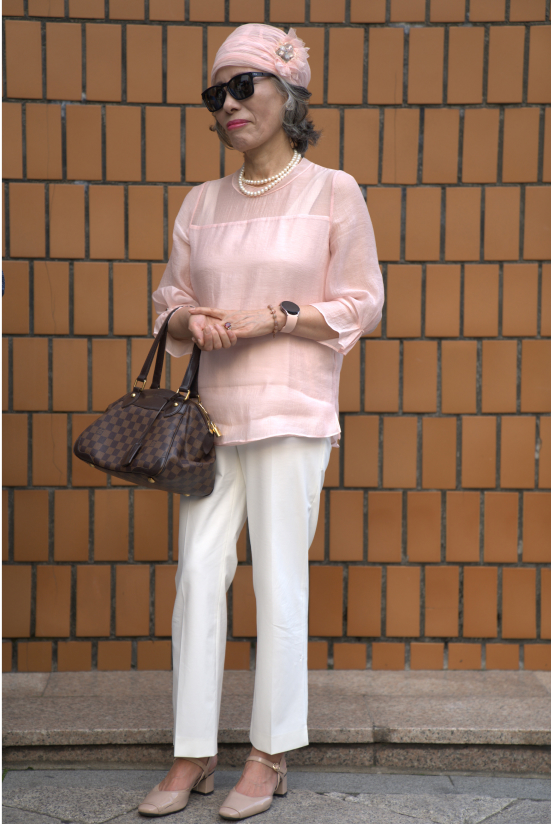

인사동 문화의 거리에서
Lee mi ra
이미라

- 인터뷰 소개
- 작성일2023. 09. 21
- 위치인사동 문화의 거리에서
- 인터뷰 소개
- 작성일: 2023. 09. 21
- 위치: 인사동 문화의 거리에서
-
산뜻한 파스텔 핑크 쉬폰 셋업과 악세사리
그리고 환한 미소가 아름다우셨던 - 인사동 거리를 돌아다니다가 저 멀리에서부터 눈에 확 돋보였던 그가 있다. 굉장히 화사하고 단아한 룩으로 그가 지나가는 거리는 마치 가을이 아닌 벌써 봄이 온 것만 같은 기분이었다. 그에게 인터뷰를 요청하였고 흔쾌히 수락해 주셔서, 그의 머리부터 발끝까지 디테일이 담긴 패션에 대하여 이야기를 나눴다.
- Q. 인터뷰 응해주셔서 감사합니다. 간단한 자기소개 부탁드려요.
- 안녕하세요~ 저는 그림 한국화를 그리고 있는 사람인 이미라에요. 이렇게 또 한국화 전시회를 열게 되어 인사동에 방문했는데 인터뷰를 하게 되어 쑥스럽네요.

MOSS 앱에서 비슷한 상품 보러가기

MOSS 앱에서 비슷한 상품 보러가기

MOSS 앱에서 비슷한 상품 보러가기

MOSS 앱에서 비슷한 상품 보러가기
- Q. 계속 옷에 시선이 가게 되는데요. 오늘 옷에 대한 소개와 좋아하는 스타일에 대해 소개해주세요.
- 평소에 비해 비교적 평범하게 입은 날인데 이렇게 인터뷰를 하게 되었네요. 오늘은 연핑크 색상으로 화사한 느낌이 들게 입어 보았고 목걸이와 반지로 포인트를 주었어요. 가장 신경 쓴 부분은 색상 매치인 것 같아요. 평소에도 전 평범한 옷보다는 럭셔리한 옷을 좋아해요.
- Q. 평소에도 옷을 구매하는데 있어서 본인만의 기준이 있나요?
- 저는 워낙 옷에 관심도 많고 좋아하기 때문에 명품이나 보세 가리지 않고 저와 어울리는 옷을 찾아 입는 것 같아요. 그러나 옷에서 디자인을 가장 중요하게 생각하는 사람이라 아무리 비싸고 좋은 명품이라고 해도 디자인 별로면 구매하지 않아요.
- Q. 패션에 대한 본인만의 가치관이나 철학이 있으신가요?
- 음 철학까지는 아니지만 하나의 생각을 말해보자면, 전 나이가 들수록 더욱더 신경 써서 겉모습을 꾸며야 한다고 생각해요.
- Q. 평소에 자주 방문하시는 곳이 있다면 소개해 주실 수 있나요?
- 우리는 그림을 그리고 전시회를 여는 것이 업인 사람이기 때문에 주로 이런 전시회가 많이 열리는 곳에 있어요. 그 외에는 고궁에 산책 가는 것도 좋아하고 풍경이 좋은 찻집에 가서 시간을 보내는 것도 좋아하는 것 같네요.
- Q. 나에게 있어서 옷을 한마디로 정의 한다면?
- 나에겐 옷이란 디자인이에요. 전 절대 옷은 아무거나 입을 수 없고 디자인에 따라 좋아 보이는 것만 입을 수 있기 때문에 옷이란 디자인이라고 생각해요.


- Q. 옷을 감각있게 잘 입고 싶은 사람들에게 한마디를 한다면?
- 의복이 즉 사람의 날개이기 때문에 아까 말한 저의 옷에 대한 생각에서도 이어지는 말이지만 나이가 들수록 옷도 더욱더 신경을 써서 깔끔하게 입는 게 중요해요. 단순히 옷은 입는 것이 아닌 자신을 표현하는 수단이기 때문이죠.